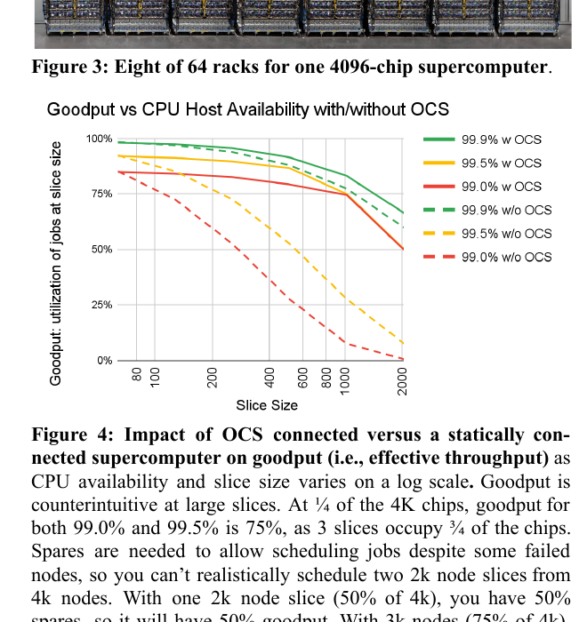
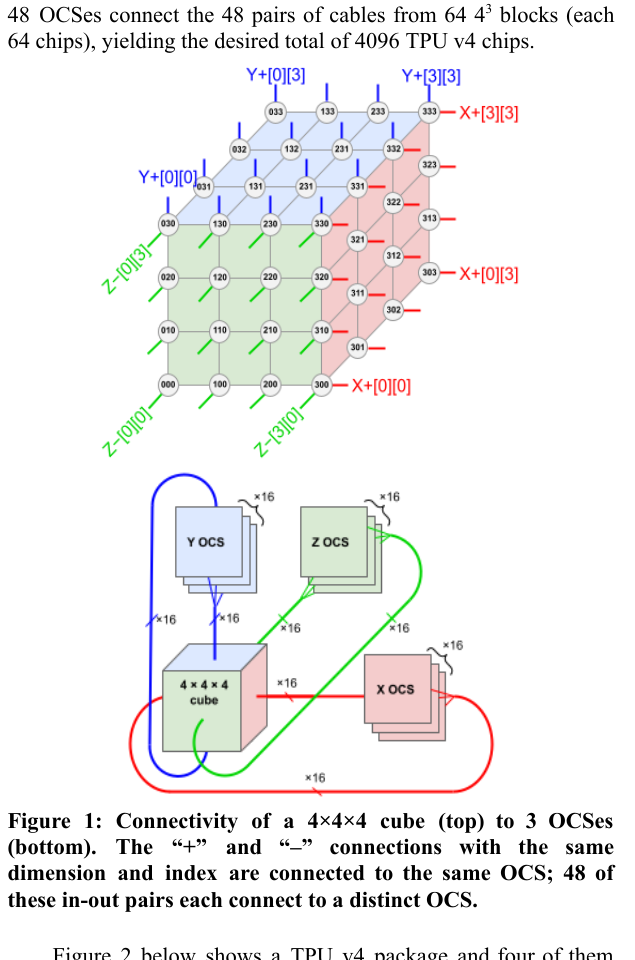
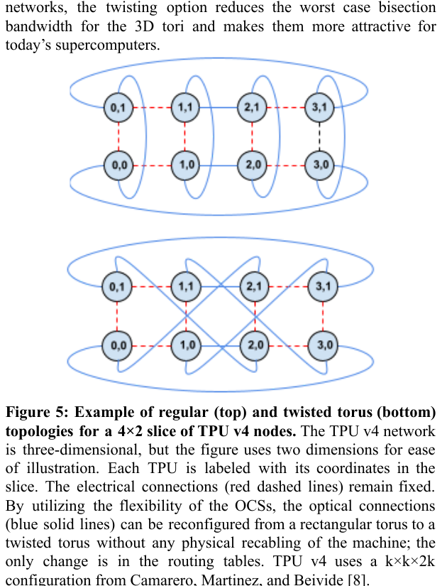
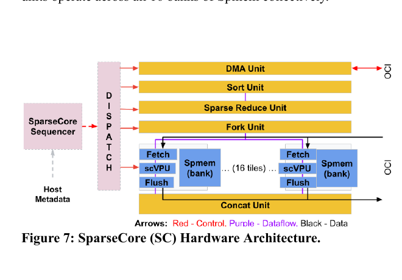
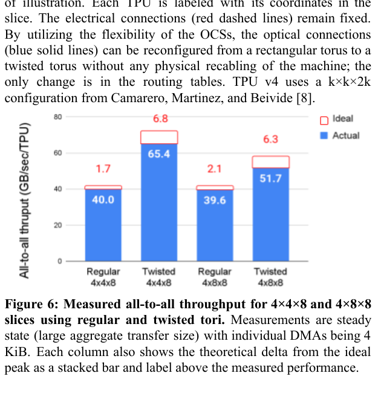
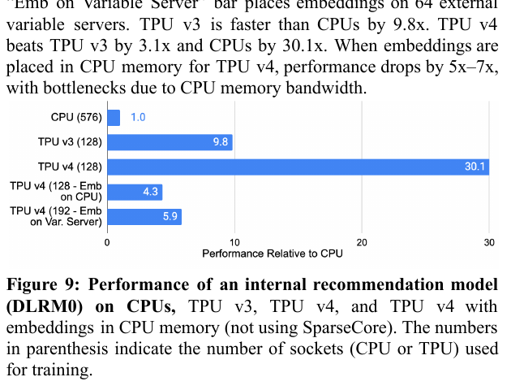
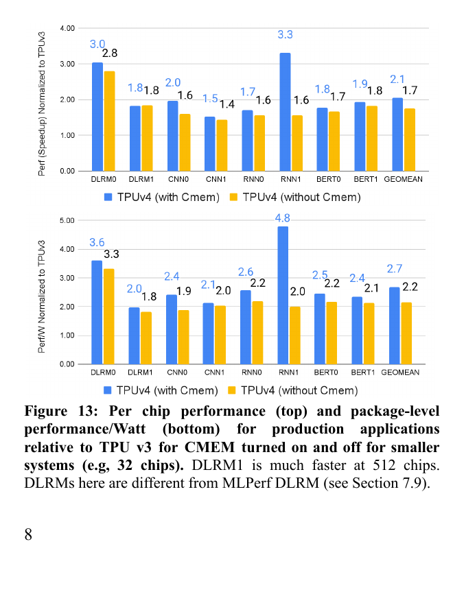
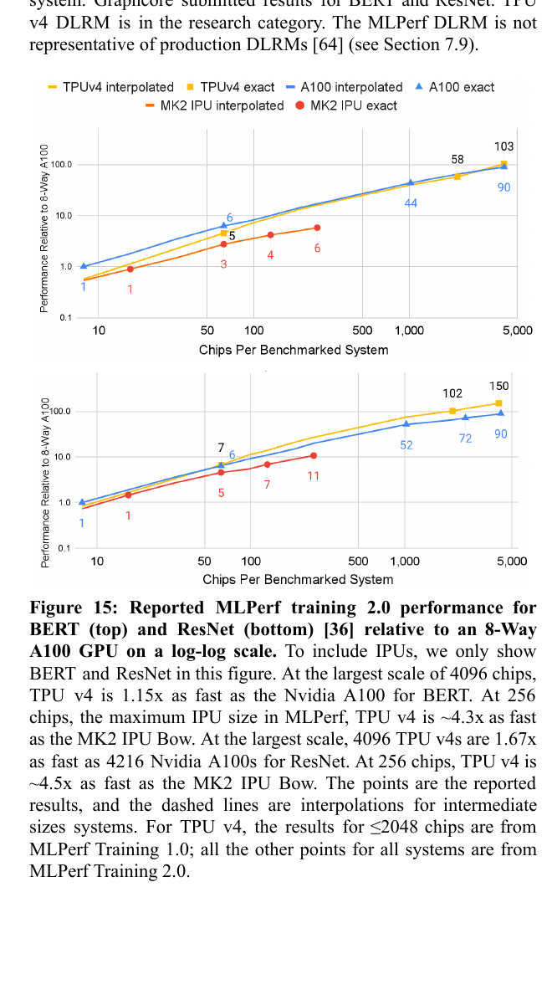
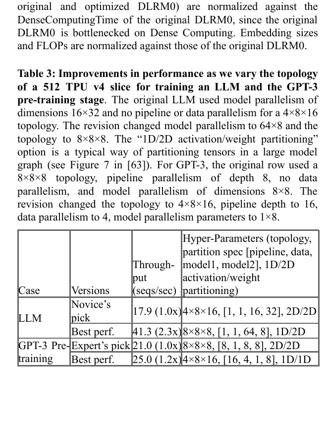

TPU v4: An Optically Reconfigurable Supercomputer for Machine Learning with Hardware Support for Embeddings
TPU v4 以 64-chip 電氣積木、48 台光學電路交換器（OCS）與可配置的 3D torus，把 4,096 顆加速器的可用性、排程與通訊問題轉成「可重接的拓樸」；再以每晶片的 SparseCore 承接 embedding 的低算術強度與 all-to-all 瓶頸，形成一套面向快速變動 ML 工作負載的生產級系統。摘要與 §1 · PDF p.1§2.1–2.2 · PDF p.2 · Figure 1§3.1–3.5 · PDF p.5
實驗事實在 4×4×8 與 4×8×8 slices 的穩態 all-to-all microbenchmark 中，twisted torus 相對 regular torus 分別達 1.63× 與 1.31× throughput；這證明特定非立方拓樸可提升該通訊測試，並不是所有 workload 的 end-to-end 加速，也不能把聯合系統收益全歸因於 OCS 單一元件。§2.8 · PDF p.4 · Figure 6
文章目錄
先看 3D Torus、OCS 與稀疏 Embedding 的三種資料路徑
最小先備知識
- Slice
- 分配給單一工作的 TPU 子集合。TPU v4 的合法大 slice 由 4×4×4 block 組成，幾何可寫成 4i×4j×4k；形狀會改變 hop、bisection 與 parallelism 映射。
- 3D torus
- 每個節點沿 x、y、z 三軸連到鄰居，邊界再 wrap around。相較 2D torus，當節點數為 N 時，其 bisection scaling 由約 N1/2 提升至 N2/3。
- OCS
- Optical Circuit Switch；本文使用 Palomar 的 3D MEMS mirrors，在毫秒級建立 1:1 光路。它不是 packet switch，不做流量統計多工；價值是改變「誰與誰直連」。
- Goodput
- 在給定 slice size 下，真正能被排成完整工作的晶片比例。它同時受故障與為大型工作保留 spare capacity 影響，不等同單晶片 uptime。
- Embedding
- 用離散 ID 查表取得向量。單次操作的 FLOPs 少、存取稀疏且不規則；分散 table 後常需要 variable-length all-to-all，故瓶頸會落在 HBM、injection／bisection bandwidth 與負載平衡。
- SparseCore
- TPU v4 內專門處理 embedding 的資料流引擎；每個 SC 以 16 個 compute tile 對 16 個 HBM channel，並用 cross-channel primitives 完成 DMA、sort、sparse reduce、fork、concat。
為什麼 TPU v3 的做法不能直接放大
TPU v3 的最大系統為 1,024 chips，部分跨機架 wraparound link 已因距離必須使用光纖；若沿用固定佈線擴大四倍，會同時增加昂貴 optical links、惡化 2D torus 的 bisection，並讓單一元件故障更容易破壞可排程的完整 slice。TPU v4 因此不是只做更快晶片，而是把「physical deployment unit」與「logical job topology」分離。 §1 · PDF p.1
工作負載也在變：2022 年十月的 TPU v4 training mix 中，Transformer 占 57%，其中 LLM 31%、BERT 26%；MLP／DLRM 仍占 24%。系統若只針對矩陣乘最佳化，會把 embedding 的 gather/scatter 與全域交換推回 CPU／網路，形成 Amdahl bottleneck。 Table 1 · PDF p.2
分析 本文的設計主軸是可重組性與專用化的平衡：OCS 讓同一批硬體可為不同 job 形成不同網路；SparseCore 則把一類長期且高占比的稀疏操作固定成專用資料路徑。前者吸收 workload 變動，後者處理 dense core 無法有效承擔的結構性瓶頸。
有了這些背景，下一個問題是：固定互連為何在 4K 規模同時輸給故障、切片與模型形狀。
固定互連為何在 4K 規模同時輸給故障、切片與模型形狀
作者面對的不是單一「把晶片做快」問題，而是三個尺度上的聯合最佳化：晶片內稀疏／密集資料路徑、slice 內通訊拓樸，以及整座 4K-chip supercomputer 的部署與可用性。
問題 A：固定網路在 4K 規模放大故障與碎片
系統有 4,096 TPU chips 與 1,024 CPU hosts（每 host 4 TPU）。同步訓練要求整個 slice 在 checkpoint 之間持續可用；固定連線下，即使總空閒晶片數足夠，也可能因位置不連續而找不到合法 topology。TPU v3 的 256-chip job 必須找 256 顆連續 idle chips；TPU v4 希望能從任意位置挑四個 64-chip block。 §2.3–2.5 · PDF pp.3–4
{kind=link}

問題 B：同一節點數，不同形狀與 parallelism 需要不同網路
data parallel 常由 all-reduce 的 injection bandwidth 支配；model／embedding sharding 可能由 all-to-all 的 bisection 支配；pipeline parallel 則在意相鄰 stage latency。故 512 chips 不只有「數量」：4×4×32 的 cigar 與 8×8×8 的 cube 對不同 traffic pattern 會有不同代價。每個 job 需要在 topology、pipeline/data/model parallel dimensions 與 tensor sharding 間一起選擇。 §2.7, §4 · PDF pp.4, 7 · Table 3
問題 C：embedding 不是縮小版 GEMM
單一 embedding table 可從數十 MiB 到數十 GiB，多表合計可達數 TiB；每步只觸及少量 row，且 ID 頻率分布造成負載不均。若 table model-parallel sharding，lookup 要 variable-length all-to-all；若 data-parallel replication，更新則要 all-reduce。設計目標因此是容量、隨機存取、跨 channel primitives 與網路帶寬，而非峰值 FLOPS。 §3.2–3.5 · PDF p.5
在給定晶片、機架、功率與工作負載下，同時提高：
\[\text{useful training throughput} = f(\text{available slice},\ \text{topology},\ \text{parallelism},\ \text{HBM/ICI balance})\]
本文沒有給出一個可直接求解的總體目標函數；上式是閱讀用的系統分解。論文分別以 goodput、all-to-all throughput、seq/s、production speedup 與 perf/W 觀測各子問題。
分析 成功條件不是每項指標都最大，而是移除下一個 Amdahl bottleneck。OCS 若只增加可用 slice、但模型仍被 embedding 拖住，整體吞吐不會充分提升；SparseCore 若很快、但 2D 網路的 all-to-all bisection 不足，也會在大規模反向被通訊主導。這解釋了論文為何把網路與 embedding accelerator 放在同一篇系統敘事中。
替代路線各自解了什麼，又留下什麼
三個問題確立後，最有用的比較不是替互連排總名次，而是看每條路線把哪些限制留給 scheduler、packet fabric 或專用硬體。
固定 torus：TPU v3
TPU v3 最大 1,024 chips，使用 2D fixed topology；TPU v4 改成 3D torus 並可用 OCS 選擇 block／wraparound。核心差異不是只有多一維，而是把跨 rack edges 從 physical invariant 變成 scheduler 可配置資源。 §2, §5 · PDF pp.2–7 · Table 4
階層式 GPU 網路：NVLink／NVSwitch + InfiniBand
論文描述 NVIDIA 系統在 4–256 GPUs 內用 NVLink／NVSwitch，較大規模再接 InfiniBand；TPU v4 則以每晶片六條 ICI links 維持 3D torus，OCS 只建立 1:1 circuits。作者估計若用 200 Gbit/s InfiniBand 取代 400 Gbit/s ICI 與 OCS，需 568 switches 而非 48 OCS，模擬 all-reduce 慢 1.8–2.4×、all-to-all 慢 1.2–2.4×。 §7.2–7.3 · PDF p.10
分析 這不是 OCS 與 InfiniBand 的公平實機 benchmark：link generation、topology、protocol 與 switch radix 都不同，且 simulator 忽略 CPU protocol overhead。可用來理解作者為何選 integrated ICI+OCS，不能泛化成「所有 IB cluster 都慢 2×」。
Clos／Dragonfly 與先前 OCS 研究
Clos、Dragonfly 提供 packet-switched any-to-any connectivity 與多租戶統計共享；TPU v4 以應用規整、長時間運行的 synchronous jobs 換取 circuit-switched topology tailoring 與 slice isolation。相關 OCS 工作曾提出 datacenter／HPC prototypes；作者把本系統定位為第一個商用 supercomputer production deployment，以及第一個利用 reconfigurable interconnect 提升 performance 的部署。 §8–9 · PDF p.12
同期 DSA：A100 與 Graphcore MK2 IPU
TPU v4、A100、IPU 都是 7nm 左右同期架構，但處理器風格與 memory hierarchy 差異大。本文以 MLPerf 做外部交叉檢查；它比 peak FLOPS 更接近應用結果，卻仍讓 vendor 自選系統規模。最適合的解讀是「TPU v4 的系統 balance 在這些 submissions 中具競爭力」，不是單晶片架構排名。 §6–7.1 · PDF p.9 · Figs. 14–16
問題的限制已經清楚；接著要抓住作者最關鍵的轉念。
可重接的 4,096-chip TPU：拓撲、故障與 Embedding 的共同設計
這篇論文最值得學的不是單一峰值，而是它如何把「晶片數放大四倍」拆成幾個彼此耦合、但可驗證的系統問題。
先看因果鏈
| 症狀 | 根因 | 需求 | 機制與證據 | 邊界 |
|---|---|---|---|---|
| 4096-chip 系統中，單一 CPU host 或 64-chip block 故障會讓大型同步工作難以湊齊 slice。 | 固定佈線把「哪一顆可用」與「能否形成合法拓樸」綁死；大型工作還需要大量備援容量。 | 在不重新拉線下繞過故障，並允許 scheduler 從任意 block 組 slice。 | OCS 像可程式化配線板，從 64 個 4×4×4 block 中接出 torus；Figure 4 的 goodput 曲線顯示，在 99.0%–99.5% host availability 下多數 slice 有明顯改善。 §2.3 · PDF p.3 · Fig. 4 | Figure 4 是簡化模型且假設請求大小相同；2K/3K slice 仍受「必須保留 spare」限制。 |
| 非立方 slice 的規則 torus，最差 cut 可能壓縮 all-to-all／collective 帶寬。 | 長寬不均使流量集中在較窄的 bisection。 | 不增加 switch 或重新佈線即可改變最差路徑。 | OCS 改寫 optical edges 形成 twisted torus；4×4×8 與 4×8×8 的穩態 4 KiB-DMA all-to-all 分別由 40.0→65.4、39.6→51.7 GB/s/TPU。 §2.8 · PDF p.4 · Fig. 6 | 是通訊 microbenchmark，不等於每個訓練工作的端到端加速。 |
| 推薦模型的 embedding lookup／update 吞吐不佳。 | 數十 MiB 到數十 GiB 的 table、細粒度 gather/scatter、稀疏且不均衡的存取，受容量、HBM、ICI 與 bisection 限制，而非矩陣乘 FLOPS。 | 把稀疏資料流從 CPU 與 dense TensorCore 解耦，且可與 dense compute／通訊重疊。 | 每顆 TPU 配 4 個 SparseCore；內部 DLRM0 在 128 TPU 上為 CPU 的 30.1×、TPU v3 的 3.1×；把 embedding 移回 CPU／外部 variable server 後只剩 4.3×／5.9× CPU。 §3.6 · PDF p.6 · Fig. 9 | 比較的 socket 數不同，模型是未公開的內部 workload；不能外推到所有推薦模型。 |
| 峰值 FLOPS 不能代表生產工作負載、能效或大規模 time-to-train。 | memory、interconnect、pipeline balance、功率封頂與軟體共同決定實際利用率。 | 同時驗證 production workload、MLPerf、功率與 scale-out。 | 八個生產工作負載相同 slice size 的每晶片幾何平均效能為 TPU v3 的 2.1×，package-level perf/W 為 2.7×；MLPerf 的 BERT／ResNet 大系統比較則各為 A100 的 1.15×／1.67×。 §5 · PDF p.8 · Fig. 13 §6 · PDF p.9 · Fig. 15 | 跨世代比較同時改變製程與多個子系統；MLPerf 允許廠商選系統大小，且曲線含插值。 |
論文真正回答的三件事
Scale
如何把 1K 擴成 4K？ 用固定的 4×4×4 電氣積木控制機架內複雜度，再把跨積木連線交給 OCS，將部署、故障繞路、排程、隔離與 topology tailoring 放進同一個機制。
Balance
如何避免 dense-only 加速器失衡？ SparseCore 只占約 5% die area／power，卻提供專用的 fetch、sort、reduce、fork、concat 與 16 個 HBM-tied compute tiles。
Evidence
證據是否涵蓋全棧？ 有 topology microbenchmark、production scaling、內部 DLRM、MLPerf 與功率量測；但 availability、InfiniBand 替代方案、碳排則是模型或估算。
Judgment
最穩健結論不是「OCS 讓所有模型更快」，而是 OCS 把固定佈線造成的運維與拓樸限制變成軟體可選項；收益大小取決於 slice 形狀、通訊型態與 scheduler。
代表性 claim–test pairs
作者主張 OCS 可讓超級電腦在較低元件可用率下仍維持有用的 slice goodput，並可依工作負載重組 topology。 §2.3–2.5 · PDF pp.3–4 · Figure 4
實驗事實 論文以 availability model 比較有／無 OCS，並以兩個 slice 的實機 all-to-all microbenchmark 測 regular 與 twisted torus；後者得到 1.63× 與 1.31×。這兩個測試分別支撐「可形成更多可用 slice」與「特定非立方 topology 可增加通訊吞吐」，但沒有直接測到所有 end-to-end training job。 §2.3 · PDF p.3 · Fig. 4 §2.8 · PDF p.4 · Fig. 6
作者主張 SparseCore 是商用 ML 系統中首個 embedding 加速支援，能避免把稀疏操作留給 CPU 所造成的 Amdahl 瓶頸。 §3.1–3.5 · PDF p.5
實驗事實 DLRM0 的五條 bar 同時比較 CPU、TPU v3、完整 TPU v4，以及兩個停用 SparseCore 的替代 placement；停用後相對完整配置慢約 5–7×。這是本文最接近組件移除實驗的證據。 §3.6 · PDF p.6 · Fig. 9
直覺成立後，再沿著一次完整執行看它如何落成系統。
從 64-chip Block 到 SparseCore：TPU v4 怎麼重配整台機器
機制一：64-chip 電氣積木 + OCS 光學配線層
- 固定的機架內單元：每個 rack 內是一個 4×4×4 block，共 64 TPU chips 與 16 CPU hosts。block 內以 passive electrical cables 形成 3D mesh。
- 把六個面暴露成光纖：每一面 16 links，共 96 optical links。相對兩面同一維度／index 的 in–out pair 接到同一 OCS，因此每個 block 接 48 台 OCS。
- 全機 48 台 OCS：每台 Palomar 是 136×136，128 ports 服務 64 個 block，另 8 ports 作測試／維修 spare；circulator 讓同一 fiber 雙向傳光，減半 ports 與 cables。
- 建立 logical 3D torus：scheduler 選定 block 後，OCS 在毫秒級設定 1:1 circuits，補上 wraparound links；不同 slice 間沒有共享 packet fabric，作者稱可提供 air-gapped network isolation。
- 每 job 靜態選 topology：合法幾何為 4i×4j×4k。非立方且符合 n×n×2n 或 n×2n×2n 時，可把 optical edges rewiring 成 twisted torus；job 執行中通常不動態切換。
{kind=link}

作者主張 這是第一個在商用 supercomputer 內使用 OCS、並以可重組互連提升應用效能的生產部署；整個 optical fabric 低於資本成本 5%、低於系統功率 3%。 §2.10, §8 · PDF pp.5, 12
OCS 同一機制帶來的四個下游效果
Availability
失效 block 不必位於原先固定 torus 的正確座標；scheduler 可選健康 block，再由 OCS 接回所需 topology。
Scheduling
大 slice 不再要求一段物理連續 idle chips，降低資源碎片；例如 192 chips 可組成 4×4×12。
Deployment
TPU v3 要等 1,024 chips 與所有 cables 完成才可用；TPU v4 可按 64-chip block 漸進上線。
Performance
可在 cube、cigar、regular／twisted torus 間選擇，讓 network dimensions 對齊 data、model、pipeline parallelism。
{kind=link}

機制二：SparseCore 的 embedding 資料流
每顆 TPU v4 有 4 個 SparseCore（TPU v3 為 2 個）；SparseCore 合計約占 die area 與 power 各 5%。論文把它描述為 dataflow architecture，關鍵不是一個大型 ALU，而是讓資料從 HBM 直接流過專門 primitive：
- Fetch：每個 SC 有 16 個 compute tiles，各綁一個 HBM channel；FetchUnit 把 activation／parameter 拉入該 tile 的 2.5 MiB Sparse Vector Memory slice。
- 局部可程式運算：8-wide SIMD scVPU 執行 embedding 相關算術；FlushUnit 在 backward 將更新後 parameter 寫回 HBM。
- 跨 channel 重排：DMA、Sort、Sparse Reduce、Fork、Concat 五個 Cross-Channel Units 對所有 16 banks 操作，承接 dedup、聚合、分派與可變長度資料。
- 與 dense path 重疊：SparseCore、TensorCore dense compute 與 ICI communication 可平行，避免 CPU 成為 central memory server；完整 4K 系統形成 128 TiB global-addressable HBM 空間。
{kind=link}

分析 SparseCore 的價值可由「placement」理解：若 embedding 留在 CPU，四顆 TPU 共用一個 host 的 DRAM path；若另建 variable servers，又把瓶頸推到 datacenter network 與 tail latency。把 SC 放回每顆加速器附近，等於讓容量、HBM channel 與 ICI 隨 TPU 數水平擴充。
機制三：模型、平行化與 topology 共同搜尋
PA-NAS 可調整 DLRM dense layer 與 embedding layer 的負載比例，使原本約 25% idle 的 SparseCore 更接近與 TensorCore 平衡，端到端改善超過 10%。另一組搜尋同時改 topology、pipeline/data/model parallelism 與 1D/2D tensor partitioning：LLM 由 17.9 提升到 41.3 seq/s，GPT-3 pre-training 由 21.0 到 25.0 seq/s。 §4 · PDF p.7 · Fig. 10 §4 · PDF p.7 · Table 3
實驗事實 Table 3 的每一列不只更換 topology，也同時更改多種 parallelism／partition parameters。因此 2.3× 與 1.2× 是聯合配置搜尋的結果，不能歸因為 OCS 單一組件的增益。 §4 · PDF p.7 · Table 3
為何每個 block 對應 48 台 OCS
\[6\ \text{faces}\times16\ \text{links/face}=96\ \text{optical links}\]
\[96\div2=48\ \text{opposite-face in/out pairs}\]
\[64\ \text{blocks}\times64\ \text{chips/block}=4096\ \text{chips}\]
相對兩面的同 index links 進入同一 OCS；circulator 使每條 fiber 雙向使用。48 台 OCS 各自決定一組跨 block 的一對一連線。 §2.2 · PDF p.2 · Fig. 1
3D torus 為何比 2D torus 更適合 scale-out
對 N 個節點、各維度大致均衡的 torus：
\[B_{2D}\propto N^{1/2},\qquad B_{3D}\propto N^{2/3}\]
\[\frac{B_{3D}}{B_{2D}}\propto N^{1/6}\]
N 增大時，3D topology 可跨越 cut 的 links 成長更快。論文在 embedding model 上報告同 chip count 的 TPU v4／v3 bisection ratio 為 2–4×，相應 embedding performance 為 1.1–2.0×；到 1,024 chips 後 SparseCore overhead 開始主導，故頻寬提升不再等比例轉成效能。 §3.6 · PDF p.6 · Fig. 8
Twisted torus 的吞吐比值
\[\text{speedup}_{4\times4\times8}=65.4/40.0\approx1.63\]
\[\text{speedup}_{4\times8\times8}=51.7/39.6\approx1.31\]
分子與分母是 steady-state all-to-all GB/s/TPU，單筆 DMA 為 4 KiB。圖中紅色空框是距理想峰值的差額，不是額外實測 throughput。 §2.8 · PDF p.4 · Fig. 6
能源與營運碳排的估算鏈
作者採用保守的 machine-level perf/W 優勢 2×，並以 average on-prem PUE 1.57 對 Google TPU v4 site PUE 1.10：
\[\text{energy ratio}\approx 2\times\frac{1.57}{1.10}=2.85\]
再乘平均 grid carbon intensity 0.475 與 Oklahoma hourly-matched renewables 0.074 kgCO\(_2\)e/kWh：
\[\text{operational CO}_2\text{e ratio}\approx2.85\times\frac{0.475}{0.074}=18.3\approx20\]
因此作者摘要成 TPU v4 Google Cloud 約用 1/6–1/2 能源、約 5% operational CO₂e。這是情境估算，不含 embodied carbon；結果高度依賴比較機器、PUE、地點與電力會計假設。 §7.6 · PDF pp.10–11
分析 上述式子揭示兩個不同層次：torus scaling 是拓樸結構關係，測得的 1.63×／1.31× 是特定 microbenchmark；碳排 20× 則是多個假設相乘的情境結果。三者不能用同一種「實驗事實」強度來引用。
方法看似合理，真正的問題是：實驗有沒有把這條因果鏈撐起來？
可用性、吞吐與能效：設計收益如何被量出來
本文把不同證據型態並置；讀者必須先確認每個結果是量測、benchmark 重跑、simulation，還是情境估算。
| 待驗證主張 | 測試／資料 | 指標與對照 | 可回答 | 不能回答 |
|---|---|---|---|---|
| OCS 改善故障下可排程容量 | Figure 4 availability model；host availability 99.0%、99.5%、99.9%，slice 64–2000 | goodput；有 OCS vs 固定連線 | 在模型假設下，繞路如何改變可形成 slice 的比例 | 真實多尺寸 job arrival、repair time、checkpoint loss 與 scheduler policy |
| twisted torus 增加非立方 slice 通訊吞吐 | 4×4×8、4×8×8 實機 steady-state all-to-all | GB/s/TPU；regular vs twisted，4 KiB DMA | 特定 geometry 的 topology effect | 任意 message size、collective、模型與 end-to-end step time |
| SparseCore 避免 CPU embedding bottleneck | internal DLRM0；CPU、TPU v3、TPU v4、兩種 TPU v4 無 SC placement | 相對 CPU performance | 完整 SC 路徑對該 workload 的必要性 | 等 socket／成本比較，以及外部可重現性 |
| 模型與 topology joint tuning 有效 | PA-NAS DLRM0；512-chip LLM/GPT-3 配置搜尋 | normalized step time、seq/s | 聯合 co-design 的 attainable improvement | 單獨 topology、模型結構或 parallelism 的因果占比 |
| TPU v4 比 v3 更快且更省電 | 八個 production workloads，相同 slice size；CMEM on/off | per-chip speedup、package-level perf/W | 整代系統在內部 workload 的總體提升 | 製程、compute、HBM、ICI、SC 各自獨立貢獻 |
| 對同期外部 DSA 有競爭力 | MLPerf Training 2.0 published results；A100 在 Azure 重跑功率，TPU v4 在 Google DC 量測 | time-to-train relative performance；DSA+HBM watts | 提交設定下的公開 benchmark 結果與 64-chip 芯片功率級別 | 相同成本、軟體堆疊、資料中心與網路功率的公平 TCO 比較 |
| 通用 InfiniBand 難以直接取代 ICI+OCS | 元件數／鏈路規格加 event-driven simulator | all-reduce、all-to-all slowdown | 作者模型中的 network-level 代價 | 真實部署的 CPU overhead、成本折扣與 end-to-end production time |
| 雲端 TPU v4 降低能源與碳排 | perf/W、PUE 與 carbon intensity 假設相乘 | energy ratio、operational CO₂e ratio | 指定情境的估算量級 | embodied carbon、其他地區／時段、全生命周期 |
比較基準的關鍵條件
- TPU v4 vs v3 production comparison盡量使用相同 slice size，但兩代硬體是整體改版；Table 4 顯示 7nm vs 16nm、275 vs 123 peak TFLOPS、6×50 vs 4×70 GB/s links、4 vs 2 SparseCores。 §5 · PDF p.7 · Table 4
- Figure 11 的八個工作負載只有一半能量到 3K chips；BERT0 最多 2K、DLRM0/1 最多 1K，作者歸因尚未完成的 infrastructure fixes。 §5 · PDF pp.7–8 · Fig. 11
- MLPerf 讓廠商自行選系統大小；Figure 15 的大點是實際結果，點間線段是依 chip count 的 interpolation。比較「相近 chip count」仍不代表相同價格或功率。
- Table 6 只量 DSA+HBM，switches 未納入；A100 與 TPU v4 量測位於不同雲端／資料中心。 §6 · PDF p.9 · Table 6
OCS、availability 與 topology
實驗事實 Figure 4 模型中，沒有 OCS 時要到 99.9% CPU host availability 才能對多數 slice 維持合理 goodput；有 OCS 時，99.0% 與 99.5% 的曲線在多數 slice size 仍明顯高於固定連線。大型 slice 即使有 OCS 仍因 spare capacity 而下降。 §2.3 · PDF p.3 · Fig. 4
實驗事實 twisted torus 對 4×4×8 slice 的 all-to-all throughput 為 65.4 vs 40.0 GB/s/TPU（1.63×）；對 4×8×8 為 51.7 vs 39.6（1.31×）。生產一天的 topology sample 中，29% slices 小於 64 chips；全體有 33% geometry 可 twist，實際 28% twisted，換算約 40% 的 ≥64-chip topology 使用 twist。 §2.8–2.9 · PDF pp.4–5 · Fig. 6, Table 2
{kind=link}

SparseCore 與 embedding
實驗事實 內部 DLRM0：TPU v3（128 chips）為 CPU baseline 的 9.8×；完整 TPU v4（128 chips）為 30.1×，亦即 TPU v3 的 3.1×。TPU v4 停用 SparseCore、把 embedding 放 CPU host memory 或 64 台 external variable servers 時，分別只有 4.3× 與 5.9× CPU。 §3.6 · PDF p.6 · Fig. 9
{kind=link}

在 embedding scaling experiment 中，TPU v4 相對 TPU v3 的 bisection bandwidth 為 2.0–4.0×，embedding performance 為 1.1–2.0×；到 1,024 chips 時，作者指出 SC overhead 開始主導。這提供一個重要反例：移除 network bottleneck 後，新的 compute／control overhead 會接手。 §3.6 · PDF p.6 · Fig. 8
TPU v4 vs TPU v3 生產工作負載
實驗事實 相同 slice size 的八個 production workloads 多數快 1.5–2.0×；DLRM0 約 3.0–3.5×、DLRM1 在 512 chips 為 2.8×、RNN1 為 3.3×。Figure 13 的 per-chip 幾何平均為 2.1×，package-level perf/W 幾何平均為 2.7×。 §5 · PDF p.8 · Fig. 12 §5 · PDF p.8 · Fig. 13
關閉 CMEM 後，整體幾何平均 performance 從 2.1× 降到 1.7×；RNN1 的 speedup 從 3.3× 降到 1.6×。作者估計 perf/W 改善約 40% 來自製程，其餘來自設計；這是作者的歸因，不是完整 factorial ablation。 §5 · PDF p.8 · Fig. 13
{kind=link}

MLPerf、功率與能源
實驗事實 在論文選取的相近大規模 MLPerf 點，TPU v4 的 BERT performance 是 A100 的 1.15×、ResNet 是 1.67×；對 256-chip Graphcore MK2 IPU 約為 4.3×、4.5×。64-chip DSA+HBM 平均功率：BERT A100 380 W vs TPU v4 197 W（1.93×），ResNet 273 vs 206 W（1.33×）。 §6 · PDF p.9 · Fig. 15 §6 · PDF p.9 · Table 6
{kind=link}

作者主張 綜合保守的 2× machine perf/W、PUE 與 hourly matched renewable carbon intensity，TPU v4 Google Cloud 對假想的 contemporaneous on-prem DSA 可少用約 2–6× 能源，operational CO₂e 約只剩 5%。 §7.6 · PDF pp.10–11
分析 最可信、可直接搬用的結論依序是：同圖內 regular/twisted 實測、同模型內完整／無 SC placement、同工作負載的 v4/v3 production measurement；MLPerf 跨廠商其次；availability、InfiniBand 與 carbon 結論則需要保留模型假設。
本文沒有一個完整 factorial ablation；可用的敏感度來自五組局部 counterfactual。把它們依「控制程度」排序，能避免把跨世代總增益誤當單一組件效果。
較強：只改 optical topology
Figure 6 在相同 slice geometry 與 communication pattern 下比較 regular／twisted torus，是 OCS performance claim 最乾淨的對照。收益由 1.31× 到 1.63×，本身也顯示對 geometry 敏感。但 message size 固定為 4 KiB individual DMA，且僅量 all-to-all。 §2.8 · PDF p.4 · Fig. 6
較強：改 embedding placement／停用 SparseCore
Figure 9 保持 TPU v4 dense compute 路徑，將 embedding 移到 CPU host memory 或 variable servers；相對完整 30.1× CPU 的配置，兩者只有 4.3×／5.9×。這直接暴露 CPU memory／datacenter network bottleneck。不過 variable-server 配置使用 192 TPU、其他 TPU 配置 128，並非等資源。 §3.6 · PDF p.6 · Fig. 9
中等：CMEM on/off
Figure 13 將 TPU v4 的 128 MiB CMEM 關閉；幾何平均 performance 由 2.1× TPU v3 降至 1.7×，RNN1 從 3.3× 降到 1.6×。它支持 CMEM 對 small weights／batch 的作用，但 baseline 仍是另一代 TPU v3，無法拆出所有 memory hierarchy interaction。 §5 · PDF p.8 · Fig. 13
模型敏感度：availability 與 slice size
Figure 4 同時掃 CPU host availability（99.0%–99.9%）與 slice size。結論不是「OCS 消除故障」，而是它降低 topology fragmentation；當 request 接近系統一半以上，spare capacity 仍使 goodput 上限下降。 §2.3 · PDF p.3 · Fig. 4
混雜：共同改模型／topology／parallelism
PA-NAS 讓 DLRM0 超過 10% 更快，但同時改 embedding size 與 FLOPs；Table 3 的 2.3×／1.2× 同時改 topology 及多個 parallel dimensions。這些結果證明 design space 值得搜尋，不提供單因素 attribution。 §4 · PDF p.7 · Fig. 10 §4 · PDF p.7 · Table 3
{kind=link}

分析 若要補強論文，最重要的缺失測試是：在相同 512-chip job、相同 parallelism 與相同模型下，只切換 regular／twisted／不同 OCS geometry，量 step time、link utilization 與 tail；再用真實多尺寸 job trace 比較固定網路與 OCS 的 completed-work goodput。這能把 microbenchmark 與 production outcome 接起來。
數據回答了部分問題；剩下的是適用邊界與仍未被證明的部分。
哪些提升屬於 OCS，哪些混入模型、CMEM 與系統世代
優點
- 生產尺度與長期證據：不是小型 prototype；作者描述多座 4,096-chip supercomputer、實際 topology usage、內部 workload scaling 與公開 MLPerf。
- 一個機制解多個系統問題：OCS 同時影響部署、failure bypass、fragmentation、security isolation 與 topology tailoring，設計經濟性比「只為速度加一層網路」更合理。
- 跨層敘事完整：從 rack wiring、scheduler slice、parallel dimensions 到 embedding accelerator 與 PA-NAS，清楚呈現系統 balance。
- 有直接 counterfactual：regular/twisted 與完整/無 SparseCore placement，讓兩項核心機制至少各有一組接近因果的量測。
限制與風險
| 限制 | 影響 | 閱讀時如何收斂主張 |
|---|---|---|
| 內部 workload、系統與 simulator 不公開；多個 workload 匿名 | 外部團隊難重現 DLRM0、production mix、availability 與 IB 結果 | 把數字視為 production case study，不當成平台無關定律 |
| Figure 4 是等 request-size 假設的 availability model | 忽略實際 queue、repair、checkpoint、priority 與多尺寸 packing | 只支撐 failure bypass 的方向與上限，不宣稱實際 datacenter utilization |
| Table 3 多參數共變；跨代 v3/v4 亦同時改製程、compute、memory、network、SC | 無法量化 OCS、SC、CMEM 或 7nm 的獨立貢獻 | 只把 2.3×、2.1×、2.7×稱為 joint／generation-level result |
| 沒有 error bars、重複次數、variance 或 tail distribution | 無法判讀小差異的統計穩健性與 production jitter | 聚焦倍數較大的結果，對 1.1× 級別保守 |
| MLPerf 系統大小、軟體與 power measurement site 不一致；switch power 排除 | 不能直接推論 TCO、rack power 或等預算勝負 | 保留為 vendor-selected benchmark evidence |
| 碳排只算 operational CO₂e，採特定 PUE／地區／hourly-matching 假設 | 對 embodied carbon、其他 grid mix 與會計方法不成立 | 引用公式與假設，不單獨引用「20×」 |
| OCS 是 circuit switch；每 job topology 在本文部署中是靜態 | 不適合細粒度 packet multiplexing，重組也受排程與 churn 成本約束 | 把它視為 job/slice provisioning layer，不是一般 datacenter network 替代品 |
| TPU v4 每晶片 HBM 32 GiB，A100 為 80 GiB | 超大模型可能需要更多 TPU 與 partitioning；作者稱可用規模與 overlap 緩解，但仍承認容量限制 | 比較 time-to-train 時同步檢查 memory footprint 與 chip count |
| 主要 production 與 MLPerf 證據是訓練 | 低 batch、latency-critical、KV-cache-heavy inference 的 traffic／SLO 不同 | 可借用 topology／availability 設計原則，但不能直接搬用 training speedup |
另外，作者未比較 H100，理由是 TPU v4 與 A100 都在 2020 部署、同為 7nm，而 H100 在研究／截稿期間尚不可用；這使比較時間對齊合理，但也限制今日硬體排名解讀。 §7.4, §7.10 · PDF pp.10–11
推測 若把 OCS 應用到高 churn inference serving，毫秒級重組本身未必是瓶頸，較大的風險可能是模型載入、KV cache placement 與 session affinity；因此需要把 optical topology epoch 與 serving scheduler 的 placement epoch 對齊。本文沒有測這個情境。
哪些設計原則值得帶到下一代加速器叢集
對 AI Infra／inference cluster design 的可移植原則
- 分離 physical building block 與 logical allocation：把可靠、便於製造／佈線的固定 rack 單元，透過可配置 edge 組成 job-specific topology。對推論叢集，相同原則可套到 model replica、expert group 或 disaggregated memory pool。
- 讓 scheduler 知道網路形狀，而不只知道 free device count：TPU v4 的 slice geometry 與 parallelism mapping 共同決定效能。inference scheduler 也應把 tensor/pipeline/expert parallel traffic、prefill/decode phase 與 topology 一起考慮。
- availability 是「能否形成服務單元」而非單機 uptime：OCS 的價值在於從健康 block 重建合法 slice。對 serving，對應指標應是可形成多少滿足模型、memory 與 SLO 的 replica，而非單純 GPU availability。
- 低算術強度路徑要隨規模一起 scale：SparseCore 顯示 memory-centric primitive、HBM channel 與 interconnect 必須水平擴充。今天的類比可能是 embedding、MoE dispatch、KV-cache movement 或 retrieval，但是否值得專用硬體要由 workload share 證明。
- 不要以 peak FLOPS 做容量規劃：應以 operational intensity、memory bandwidth、collective pattern、功率封頂與軟體成熟度構成 workload roofline。
我會如何把本文轉成設計審查清單
| 檢查項 | TPU v4 啟示 | 應補的 inference 證據 |
|---|---|---|
| Failure domain | 64-chip block 是可繞過、可漸進部署單元 | host／switch failure 下 replica recovery time、SLO miss、cache warm-up cost |
| Topology-aware placement | cube/cigar/twisted 需對齊 parallel dimensions | prefill/decode、TP/PP/EP 分別的 link utilization 與 tokens/s |
| Reconfiguration cadence | OCS 毫秒切換，但 per-job 靜態 | arrival churn、model load time、session stickiness 下的 amortization |
| Memory-centric engine | SparseCore 將 gather/sort/reduce/concat 下沉到 HBM 附近 | embedding／MoE／KV movement 的 bytes/token、tail latency、die-area/power ROI |
| Evidence hierarchy | microbenchmark、production、public benchmark、simulation、estimate 並列 | 每個 claim 的 direct counterfactual 與完整 system boundary |
分析 本文最重要的架構洞見是：reconfigurability 的 ROI 來自多個運維與效能用途的疊加。只用 all-to-all 1.63× 很難獨立合理化 OCS；加上 failure bypass、fragmentation、incremental deployment 與 isolation，成本／功率低於 5%／3% 的設計才形成完整商業論證。
推測 下一步可研究「兩時間尺度」控制：慢速 OCS epoch 決定 rack/block connectivity，快速 packet routing 與 serving scheduler 在該 topology 內處理 token-level burst。這可能兼得可重組 bisection 與低延遲 multiplexing，但本文沒有提供硬體或量測證據。
- 若 Figure 4 改用真實 job-size distribution、repair time 與 checkpoint cost，OCS goodput 優勢會放大還是縮小？
- 4×4×8 的 twisted torus 為何比 4×8×8 得到更高倍數？是 bisection、path length、routing 還是 injection limit 的差異？需要哪些 counter？
- Table 3 應如何設計最小 ablation，才能分離 topology、parallelism 與 tensor partition 的貢獻？
- SparseCore 在 1,024 chips 開始由自身 overhead 主導；若 table size、feature valency 或 skew 改變，轉折點會如何移動？
- 對 latency-sensitive inference，毫秒級 OCS reconfiguration、模型載入與 KV cache migration 三者誰主導？合理的 topology epoch 應多長？
拓撲、SparseCore 與關鍵證據索引
| 正式標題 | TPU v4: An Optically Reconfigurable Supercomputer for Machine Learning with Hardware Support for Embeddings |
|---|---|
| 作者 | Norman P. Jouppi 等 14 位作者 |
| 發表 | 50th Annual International Symposium on Computer Architecture（ISCA ’23），Industry Track |
| DOI | 10.1145/3579371.3589350 |
| 年份 | 2023 |
| PDF 篇幅 | 共 14 頁 |
| 閱讀分類 | AI Infrastructure / Accelerator Clusters |
分類理由：論文的首要貢獻是把可光學重組的互連做成 4,096-chip 生產級加速器超級電腦；SparseCore 是此叢集為推薦模型所做的重要軟硬體協同設計，而非單獨的處理器微架構論文。
術語表
- OCS
- Optical Circuit Switch；以光學鏡面建立端口間固定 circuit，本文在毫秒級重組。
- Palomar
- Google 使用的 136×136 3D-MEMS OCS；128 ports 服務系統、8 ports 作測試／維修 spare。
- ICI
- Inter-Core Interconnect；TPU 間直連網路。TPU v4 每晶片六條 50 GB/s links。
- Slice
- 分配給單一工作的一組 TPU；TPU v4 大 slice 由 64-chip blocks 組成。
- Goodput
- 能被組成指定 slice 並實際服務工作的晶片利用比例；不是 raw availability。
- Bisection bandwidth
- 把網路切成兩半時可跨 cut 傳輸的總頻寬；embedding all-to-all 與大型 collective 常受其限制。
- Regular／twisted torus
- 規則 torus 按座標直接 wrap；twisted torus 重排部分 wraparound edges 以改善非立方 geometry 的最差 cut。
- TensorCore（TC）
- TPU 內面向 dense matrix multiplication 與 vector operation 的主要運算核心。
- SparseCore（SC）
- 面向 embedding gather/scatter、排序與稀疏歸約的 memory-centric engine。
- CMEM／VMEM／Spmem
- TPU v4 的 128 MiB common memory、32 MiB vector memory 與每晶片合計 10 MiB SparseCore memory。
- DLRM
- Deep Learning Recommendation Model；混合大型 embedding tables 與 dense neural network。
- PA-NAS
- Platform-Aware Neural Architecture Search；同時考量模型品質與 TPU/SparseCore 執行平衡。
- PUE
- Power Usage Effectiveness；資料中心總用電除以 IT equipment 用電。
重點數字索引
| 數字 | 意義 | 證據型態 | 位置 |
|---|---|---|---|
| 4,096 chips；64×64-chip blocks；48 OCS | TPU v4 supercomputer 組成 | 系統描述 | §2.2, Fig. 1, PDF p.2 |
| 1.63×／1.31× | twisted vs regular all-to-all | 實機 microbenchmark | §2.8, Fig. 6, PDF p.4 |
| <5% capex；<3% power | optical fabric 系統占比 | 作者報告 | §2.10, PDF p.5 |
| 30.1× CPU；3.1× TPU v3 | 完整 TPU v4 跑 internal DLRM0 | 內部實測 | §3.6, Fig. 9, PDF p.6 |
| 17.9→41.3；21.0→25.0 seq/s | LLM／GPT-3 joint configuration search | 多參數共變實測 | §4, Table 3, PDF p.7 |
| 2.1× performance；2.7× perf/W | TPU v4 vs v3 八個 production workloads 幾何平均 | 跨世代實測 | §5, Fig. 13, PDF p.8 |
| 1.15× BERT；1.67× ResNet | TPU v4 vs A100 的選定大規模 MLPerf 點 | 公開 benchmark + interpolation | §6, Fig. 15, PDF p.9 |
| 2–6× less energy；約 5% CO₂e | 指定雲端／on-prem 情境 | 多假設估算 | §7.6, PDF pp.10–11 |
論文來源索引
- 摘要與 §1：主要貢獻、4K 規模動機與 production workload framing（PDF p.1）。
- §2.1–2.2, Table 1, Figure 1：Palomar OCS、工作負載比例、64-chip block 與 48 OCS 連線（PDF p.2）。
- §2.3–2.5, Figure 4：availability goodput model、漸進部署與 scheduler 選 block（PDF pp.3–4）。
- §2.6–2.8, Figure 5：3D torus、slice isolation、parallelism mapping 與 twisted topology（PDF p.4）。
- §2.8, Figure 6：regular／twisted all-to-all microbenchmark（PDF p.4）。
- §2.9–2.10：topology 使用分布、optical fabric 成本與功率占比（PDF p.5）。
- §3.1–3.5：embedding table 規模、sharding、CPU bottleneck 與 SparseCore 動機（PDF p.5）。
- §3.5, Figure 7：SparseCore sequencer、tiles、Spmem、scVPU 與 cross-channel units（PDF p.6）。
- §3.6, Figure 8：2D／3D bisection scaling 與 embedding sensitivity（PDF p.6）。
- §3.6, Figure 9：CPU、TPU v3、完整 TPU v4 與無 SparseCore placements 的 DLRM0 對照（PDF p.6）。
- §4, Figure 10：PA-NAS 平衡 SparseCore／TensorCore 的 DLRM0 結果（PDF p.7）。
- §4, Table 3：LLM／GPT-3 topology 與 parallelism joint search（PDF p.7）。
- §5, Table 4：TPU v4 與 v3 架構／功率規格（PDF p.7）。
- §5, Figures 11–12：八個 production workloads 的 scaling 與同 slice speedup（PDF pp.7–8）。
- §5, Figure 13：per-chip performance、package perf/W 與 CMEM on/off（PDF p.8）。
- §6, Figures 14–16：MLPerf comparison、interpolation 與 roofline（PDF p.9）。
- §6, Table 6：64-chip BERT／ResNet 的 DSA+HBM 平均功率（PDF p.9）。
- §7.2–7.3：NVLink／InfiniBand 對照、switch count 與 event-driven simulation（PDF p.10）。
- §7.6：perf/W、PUE、carbon intensity 與 operational CO₂e 估算（PDF pp.10–11）。
- §7.4, §7.7–7.10：H100 時間邊界、workload churn、MLPerf DLRM representativeness 與 HBM 容量限制（PDF pp.10–11）。
- §8–9：OCS related work、production-first claim 與論文總結（PDF p.12）。